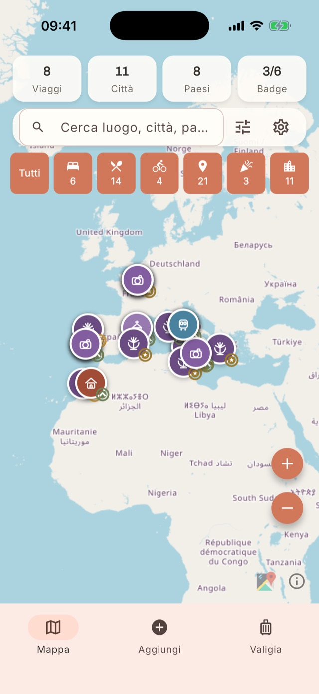
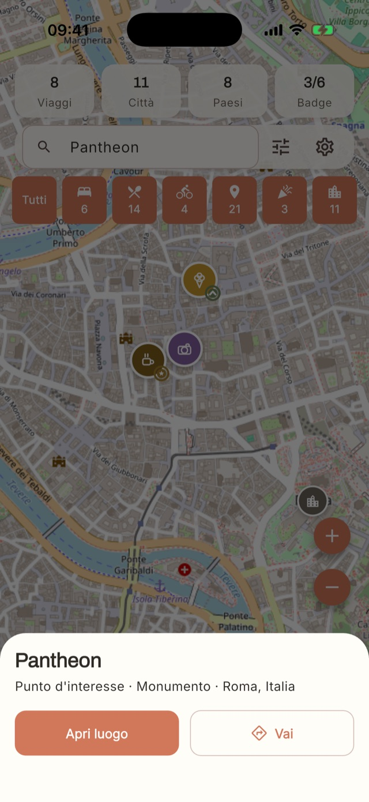
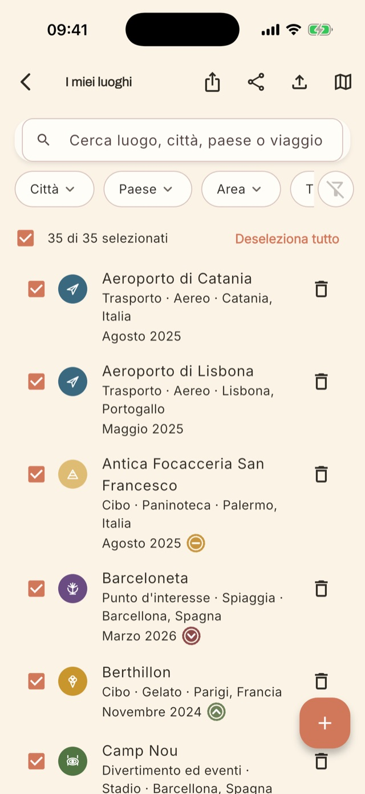
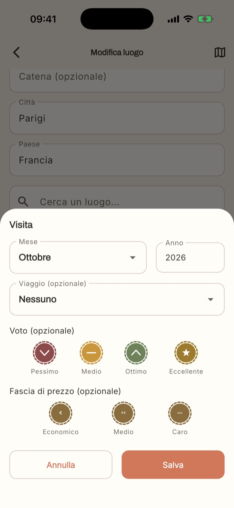
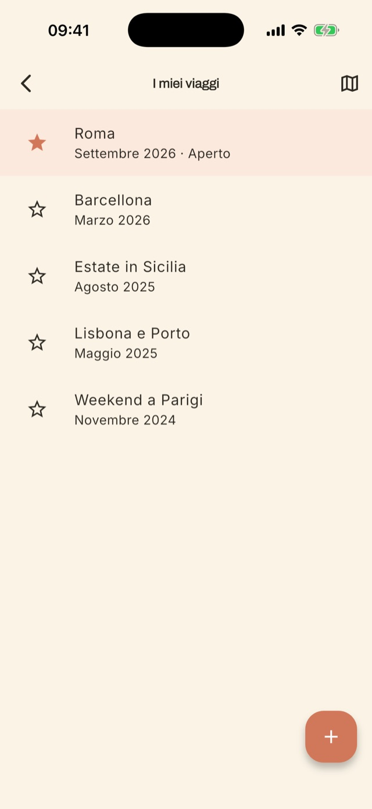
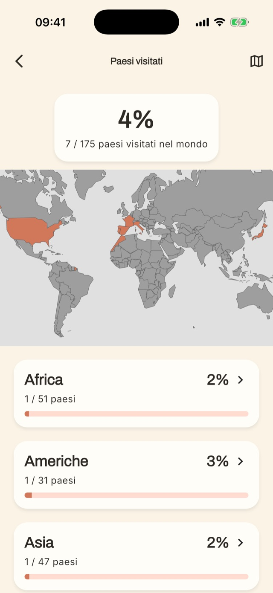
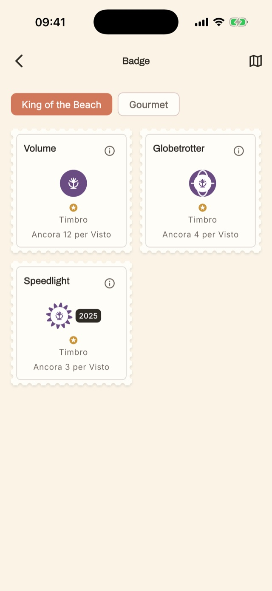

Tutto quello che serve per ricordare dove sei stato.
Un luogo esiste una volta sola. Le visite si accumulano, i viaggi le raggruppano, la mappa le mostra. Ecco come funziona.

La mappa è la tua home.
Apri l'app e vedi subito dove sei stato. In alto trovi i contatori di viaggi, città, paesi e badge; sotto, i filtri per categoria con il numero di luoghi di ciascuna.
- Un tocco su un filtro nasconde o mostra la categoria; una pressione lunga mostra solo quella.
- Ogni categoria ha icona e colore propri, come su un poster di viaggio.
- La mappa usa OpenStreetMap.

Tocca un luogo, ritrovalo subito.
Cerca un luogo per nome e la mappa ti ci porta. La scheda rapida mostra categoria, tipo e città, con due azioni: aprire il luogo per vederne le visite, oppure raggiungerlo.
- “Vai” apre il luogo in Mappe, Google Maps o Waze.
- Puoi far ricordare all'app la tua scelta.

Il tuo archivio, ordinato.
Tutti i luoghi in un elenco, con icona di categoria, città, paese, data dell'ultima visita e timbro del voto. Cerca per nome, città, paese o viaggio e filtra per area o tipo.
- Seleziona una parte dei luoghi ed esportala in KML, Excel o PDF.
- Categorie su due livelli: per esempio Cibo → Gelato, Punto d'interesse → Spiaggia.

Ogni ritorno è una nuova visita.
Torni nello stesso ristorante dopo due anni? Non crei un doppione: aggiungi una visita al luogo che esiste già. Ogni visita ha mese, anno, note e, dove ha senso, un voto.
- Voto a timbro: Pessimo, Medio, Ottimo, Eccellente.
- Fascia di prezzo per cibo e alloggi: Economico, Medio, Caro.
- Città, aeroporti e monumenti non si votano: si collezionano.

Racconta un viaggio intero.
Un viaggio è un'etichetta con nome, mese e anno, che raggruppa le visite fatte in quei giorni. Tieni aperto il viaggio in corso: le nuove visite si collegano lì.
- Aggiungi le persone con cui hai viaggiato.
- Un viaggio aperto è evidenziato in cima alla lista.

Il tuo planisfero personale.
Ogni paese in cui hai salvato un luogo si colora sulla mappa del mondo. Vedi la percentuale di mondo visitato e il dettaglio per continente.

Collezioni da completare.
Spiagge, ristoranti e altre categorie hanno i loro badge, con tre livelli da sbloccare: Timbro, Visto e Lasciapassare.
- Volume: quanti luoghi diversi hai visitato.
- Globetrotter: in quanti paesi.
- Speedlight: quanti nello stesso anno.
I dettagli che fanno la differenza.
Backup completo
Salva tutto in un file .oywa e ripristinalo quando vuoi, anche su un altro telefono.
Esporta KML, Excel, PDF
Condividi una selezione di luoghi con chi parte, o stampala per il viaggio.
Importa da altre app
Porta dentro i luoghi salvati altrove con un file KML o KMZ, e rivedili prima di salvarli.
Persone
Segna con chi hai viaggiato: famiglia, amici, colleghi. Ognuno con la sua emoji.
Vai al luogo
Un tocco e il luogo si apre in Mappe, Google Maps o Waze.
Quattro lingue
Italiano, inglese, spagnolo e portoghese.
Ti piace? Provala tra i primi.
La versione di test per iPhone e Android è quasi pronta. Lasciaci la tua email e ti scriviamo noi.